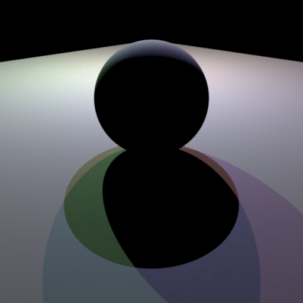
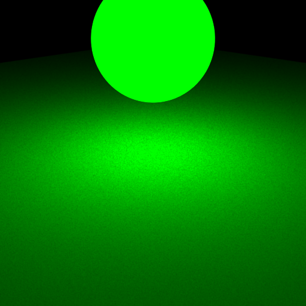
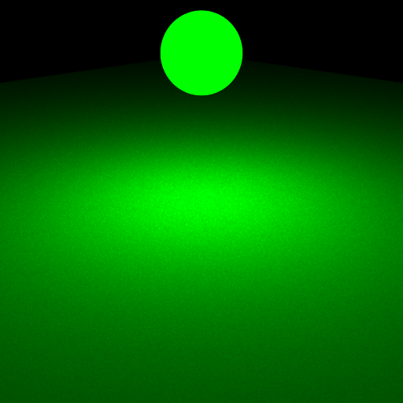
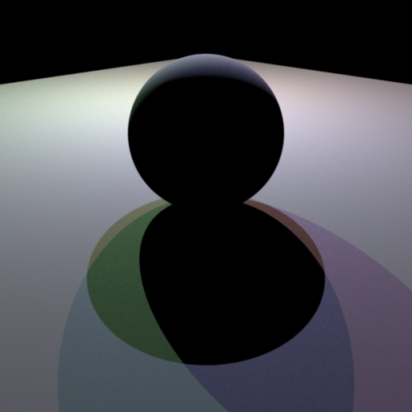
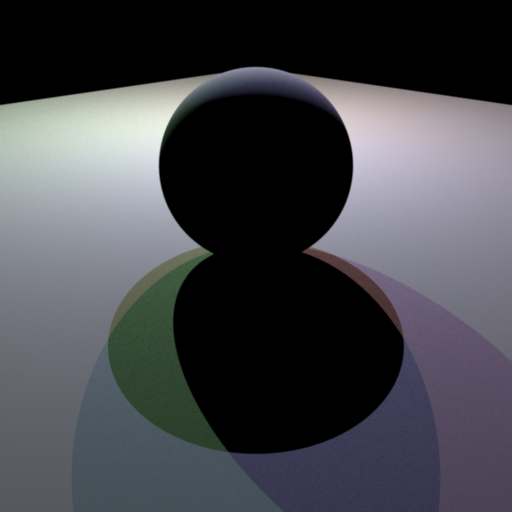
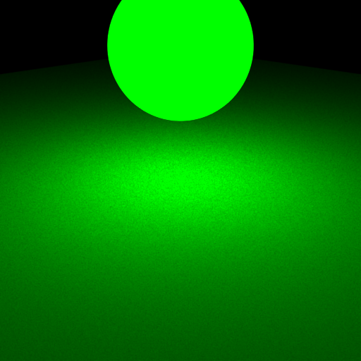
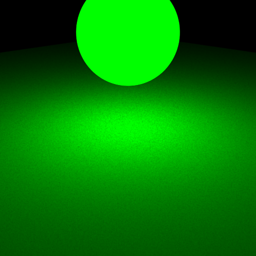

**Homework 3 - Monte Carlo Ray Tracing**
Student Name: Tao Zhang
Legi Number: 23-955-511
(Note: please read the [supplementary](#supplementary) section first before working on this report.)
# Part 1: Light Sampling
## Integrator Implementation
**Time spent on this task: 0.5h**
**Describe your implementation of `direct_ems`.**
We first check whether the camera ray intersects with any object at all,
if not we return the background color which is black. Otherwise, we check whether the
intersection point $p$ is an emitter, if so we record the emitter's radiance $L_e(p, w_o)$ by calling the
`Emitter::eval()` function. If not, $L_e$ is simply zero. Then we uniformly sample a random emitter $E$ in the
scene, and from this emitter we sample a point to get the shadow ray, then we get its radiance
, calculate the BRDF value using the `BSDF::eval()` function and the cosine term, multiply these
3 terms together we get $\frac{F(p, w_o, w_i)}{P(w_i|E)}$. Finally, we return
$L_e(p, w_o) + \frac{F(p, w_o, w_i)}{P(w_i|E)P(E)}$.
## Shape Area Light
**Time spent on this task: 0.5h**
**Describe your implementation of `AreaEmitter::eval(...)`.**
We use `lRec.n.dot(-lRec.wi) > 0` to determine whether the shadow ray actually intersecs with
the front face of the emitter. If so, we return the radiance of the emitter point, otherwise we return
zero.
**Describe your implementation of `AreaEmitter::pdf(...)` and `AreaEmitter::sample(...)`.**
We first sample a `ShapeQueryRecord sRec` with `sRec.ref == lRec.ref`, so that we can get
a sampled point on the emitter. Then we can fill every attribute of `lRec`, using the already filled `sRec`,
including `lRec.pdf == sRec.pdf`, the return value of `AreaEmitter::sample(lRec)` is just
`AreaEmitter::eval(lRec) / AreaEmitter::pdf(lRec)`.
`AreaEmitter::pdf()` simply returns `lRec.pdf` times $\frac{d^2}{\cos\theta}$ so that the pdf is in solid angle measure,
where $d$ is the length of shadow ray and $\theta$ is the angle between emitter surface normal and $-w_i$.
## Validation
**Comparison: sphere/sphere_pointlights_ems**

**Comparison: sphere/sphere_ems**
**Comparison: sphere/sphere_mesh_ems**

**Comparison: sphere/sphere2_ems**

**Comparison: sphere/sphere2_mesh_ems**
**Comparison: odyssey_ems**
**Comparison: veach_ems**
# Part 2: BRDF Sampling
## Integrator Implementation
**Time spent on this task: 0.5h**
**Describe your implementation of `direct_mats`.**
We first check whether the camera ray intersects with any object at all,
if not we return the background color which is black. Otherwise, we check whether the
intersection point $p$ is an emitter, if so we record the emitter's radiance $L_e(p, w_o)$ by calling the
`Emitter::eval()` function. If not, $L_e$ is simply zero. Then we initialize a `BSDFQueryRecord bRec`
using the information of the intersection point, then sample a BSDF using the `BSDF::sample()` function.
The shadow ray is from the intersection point in the direction of `bRec.wo`.
We then check whether the shadow ray intersects with an emitter, if so we get its radiance using
the `Emitter::eval()` function. Then we calculate the return value same as in `direct_ems`, but this time,
the pdf and Cosine term are already included in the `BSDF::sample()` function.
## Microfacet BRDF
**Time spent on this task: 0.5h**
**Describe your implementation of `Microfacet::eval(...)`.**
We have a `BSDFQueryRecord bRec` to work with, so the $w_i$ and $w_o$ are just `bRec.wi` and `bRec.wo`.
$w_h$ is then simply `(bRec.wi + bRec.wo).normalized()`. The rest of constants and functions are
already provided in `microface.cpp`, so we just follow the equation provided to contruct the return value.
**Describe your implementation of `Microfacet::sample(...)`.**
To implement `Microfacet::pdf()` is similar as just follow the equation provided in the handout.
For `Microfacet::sample(bRec, _sample)`, with the probability of `m_ks` we sample the specular component,
otherwise we sample the diffuse component. To achieve this using only the 2D `_sample` we first check
whether `_sample.x` is smaller than `m_ks`, if so we sample the specular component, otherwise we sample
the diffuse component. Then to re-use `_sample.x`, we use `_sample.x() / m_ks` and `(_sample.x() - m_ks) / (1.0f - m_ks)`
respectively in each sampling case. For the specular component, we first sample a `wh` using `Warp::squareToBeckmann`,
then set `bRec.wo = (2.0f * bRec.wi.dot(wh) * wh - bRec.wi).normalized()` which is the reflection of `bRec.wi` about `wh`.
For the diffuse component, we sample a `bRec.wo` using `Warp::squareToCosineHemisphere`.
If `Frame::cosTheta(bRec.wo) <= 0.0f`, we return zero, meaning that the sampled `bRec.wo` is below the surface.
The return value is simply, `eval(bRec) / pdf(bRec) * Frame::cosTheta(bRec.wo)`.
## Validation
**Comparison: sphere/sphere_mats**
**Comparison: sphere/sphere2_mats**
**Comparison: odyssey_mats**
**Comparison: veach_mats**
# Part 3: Multiple Importance Sampling
## Integrator Implementation
**Time spent on this task: 1h**
**Describe your implementation of `direct_mis`.**
We initialize `Color3f F_em, Color3f F_mat, float w_em, float w_mat` to zero, which indicates the
emitter and material components of the final radiance, and their weights. The finial radiance returned would be
`L_e + w_em * F_em + w_mat * F_mat`. We check intersection and set `L_e` as usual.
We do the emitter sampling first. It's pretty much the same as in `direct_ems`, except that we
set `F_em = BSDFValue_em * CosineTerm_em * radiance_em / pdf_emitter`. The denominator of `w_em`
is `pdf_emitter * emitter_em->pdf(lRec_em)` and the numerator is the denominator plus
`its.mesh->getBSDF()->pdf(bRec_em)`.
We then do the material sampling. It's pretty much the same as in `direct_mats`, except that we
let `F_mat = BSDFValue_mat * radiance_mat`. The denominator of `w_mat` is `its.mesh->getBSDF()->pdf(bRec_mat)`,
and the numerator is the denominator plus `pdf_emitter * emitter_mat->pdf(lRec_mat)`. Note that since
we are using `Emitter::pdf()` directly without calling `Emitter::sample()`, we need to set `lRec_mat.pdf`
manually to the surface pdf of the shadow ray emitter.
## Validation
**Comparison: odyssey_mis**
**Comparison: veach_mis**
# Part 4: Four-way Comparison
**Odyssey**
**Veach**
# Feedback
**Use this section to provide feedback about this assignment (each task, the handout, Nori, etc.). We appreciate your opinions to help improve future homeworks and projects.**
Good!
# Supplementary
* For each task, please note down the time you spent working through it and use at least a few sentences to describe your implementation. If applicable, also report the problems you encounter (e.g. whether or how it's solved, what is the difficult part).
* Please let us know to what extent your code is working (e.g. you only managed to work through part of this assignment, or your solution doesn't operate as expected in some corner cases). We encourage you to share your thinking process, and points will be granted based on your description even if the code is not 100% functioning.
* Nori generates both EXR and PNG format output. Please use PNG for image comparison in the report.
* This report template uses [Markdeep](https://casual-effects.com/markdeep/), which supports Markdown syntax in HTML file. For example usage, please refer to the [official demo document](https://casual-effects.com/markdeep/features.md.html).
* LaTeX is also supported for typing mathematical formulas:
$$
L_o(\mathbf{x}, \omega_o) = \int_{\Omega} L_i(\mathbf{x},\omega_i)\, f(\mathbf{x}, \omega_i, \omega_o)\, |\cos\theta_i|\, \mathrm{d}\omega_i
$$
 


 
